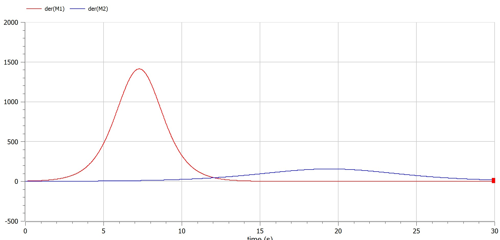
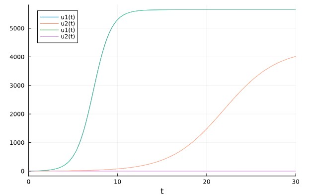
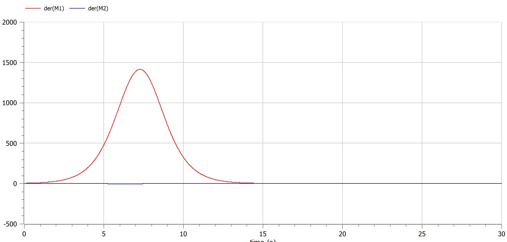

Презентация к лабораторной работе № 8
01/04/2023
Случай 1. Рассмотрим две фирмы, производящие взаимозаменяемые товары одинакового качества и находящиеся в одной рыночной нише. Считаем, что в рамках нашей модели конкурентная борьба ведётся только рыночными методами. То есть, конкуренты могут влиять на противника путем изменения параметров своего производства: себестоимость, время цикла, но не могут прямо вмешиваться в ситуацию на рынке («назначать» цену или влиять на потребителей каким-либо иным способом.) Будем считать, что постоянные издержки пренебрежимо малы, и в модели учитывать не будем. В этом случае динамика изменения объемов продаж фирмы 1 и фирмы 2 описывается следующей системой уравнений:
$$\frac{dM_1}{d\theta}=M_1\frac{b}{c_1}M_1 M_2 - \frac{a_1}{c_1}(M_1)^2$$
$$\frac{dM_2}{d\theta}=\frac{c_2}{c_1}M_2 -\frac{b}{c_1}M_1 M_2 - \frac{a_1}{c_1}(M_2)^2$$
$$a_1=\frac{P_c}{\tau_1^2 P_1^2 Nq},a_2=\frac{P_c}{\tau_1^2 P_1^2 Nq},b=\frac{P_c}{\tau_1^2 P_1^2 \tau_2^2 P_2^2 Nq},c_1=\frac{P_c - P_1}{\tau_1 P_1},c_2=\frac{P_c - P_2}{\tau_2 P_2}$$
введена нормировка t = c1θ
Случай 2. Рассмотрим модель, когда, помимо экономического фактора влияния (изменение себестоимости, производственного цикла, использование кредита и т.п.), используются еще и социально-психологические факторы – формирование общественного предпочтения одного товара другому, не зависимо от их качества и цены. В этом случае взаимодействие двух фирм будет зависеть друг от друга, соответственно коэффициент перед M_1 M_2 будет отличаться. Пусть в рамках рассматриваемой модели динамика изменения объемов продаж фирмы 1 и фирмы 2 описывается следующей системой уравнений:
$$\frac{dM_1}{d\theta}=M_1\frac{b}{c_1}M_1 M_2 - \frac{a_1}{c_1}(M_1)^2$$
$$\frac{dM_2}{d\theta}=\frac{c_2}{c_1}M_2 -(\frac{b}{c_1}+0,00083)M_1 M_2 - \frac{a_1}{c_1}(M_2)^2$$
Для обоих случаев рассмотрим задачу со следующими начальными условиями и параметрами: M01 = 3.9, M02 = 2.9, Pc = 25, N = 39, q = 1, τ1 = 29, τ2 = 19, P1 = 6.9, P2 = 15.9
Обозначения: N – число потребителей производимого продукта. τ – длительность производственного цикла p – рыночная цена товара p̃– себестоимость продукта, то есть переменные издержки на производство единицы продукции. q – максимальная потребность одного человека в продукте в единицу времени
полученные графики
{pic#001::juliafirstcase}
{pic#002::modelicazerocase}
полученные графики
{pic#001::juliafirstcase}
{pic#002::modelicazerocase}
узнал о модели конкуренции между фирмами и смоделировал ее на компьютере